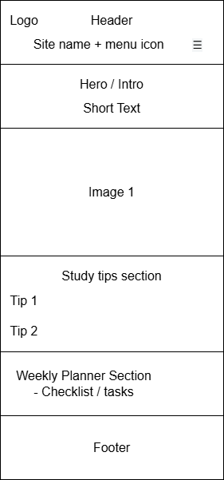
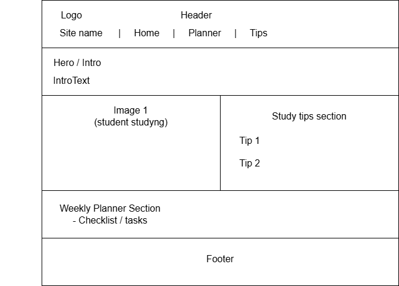

Site Name
StudySmart Planner is the name of the website. It was chosen because it represents the idea of helping students organize their study time and academic tasks in a simple and practical way.
Site Purpose
The purpose of the StudySmart Planner website is to help students improve their personal organization and study habits. The site will provide basic tips on time management, study planning, creating routines, and managing academic responsibilities. It will also include simple interactive sections and forms that allow students to apply these strategies in a practical way.
Scenarios
- How can I organize my study time better during a busy school week?
- What simple habits can help me stay consistent with my schoolwork?
Color Scheme
The StudySmart Planner website will use a clean and focused color palette that supports concentration and readability:
- Primary Color - Dark Blue (#1F3A5F): Used for headings and section titles.
- Secondary Color - Soft Green (#4CAF50) Used for links, and accents.
- Background Color - Light Gray (#F5F5F5) and White (#FFFFFF): Used for the page background to improve readability and contrast.
- Text Color - Dark Gray (#333333): Used for all paragraphs and body text for comfortable reading.
Typography
The website will use simple and readable fonts suitable for students:
- Poppins: Used for headings and section titles.
- Roboto: Used for body text and general content.
Wireframe
The StudySmart Planner website will follow a simple layout adapted for both mobile and desktop views.
Mobile View
- Header with site name, logo, and menu icon.
- Hero / introduction section with short text.
- Image related to studying or organization.
- Study tips section.
- Weekly planner or checklist section.
- Footer with basic information.
Desktop View
- Header with site name, logo, and horizontal navigation.
- Hero / intro section
- Image displayed next to study tips.
- Weekly planner or task organization section.
- Footer with basic information.